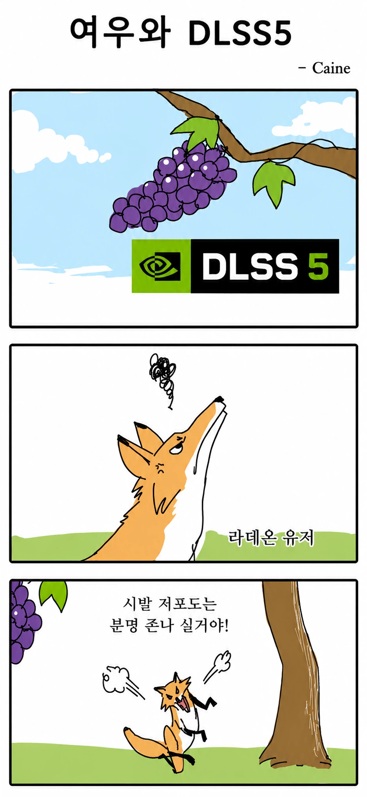

한줄요약 : 라데온이거나 50 12긱이하는 쳐다보지맙시다 목아파

한줄요약 : 라데온이거나 50 12긱이하는 쳐다보지맙시다 목아파
4090 퇴물됨 ㅠㅠ
그러기에는 5080보다 깡성능은 훨씬 좋은걸... 아직도 4090은 존나 좋지않음? 4090쓰면서 아쉬운적 없었는뎅..
4090은 그런소리 하지마라
내가 하는 게임엔 저거 적용해서 재미 볼 게임이 아직은 없어서 쓰더라도 나중에 글카 사서 콜옵1 같은 고전게임에 써볼듯.
아이고 시다
7월에 RX9070 XT를 99만원에 산 내가 승자!!
70 산지 5일됐는데 이런게 뜬다고?
5070ti는 실사용 가능하려나?
ti면 가능하지 않을까?
비켜봐 내가 해볼게(5080으로 이터널리턴 블루아카이브를 하며)
5060ti 16gb....
3년전 잠깐 쓰려고 산 2060... 10년쓰게 생겼네.
ti인데 DQHD라서 쉽지않겠군
rx6800이라 바라보지도 않고 행복해요
난 아직도 2070S쓴다...
27 qhd 5080 가능한가?
5090은 4k 가능한가?
모니터가 48인치 4k라
저해상도 쓰기 좀 그런데
우리 4070티슈 저런거 보지마